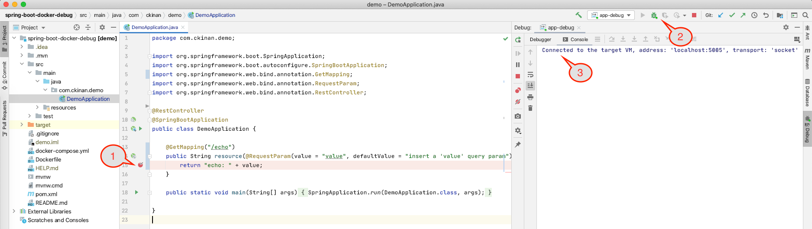
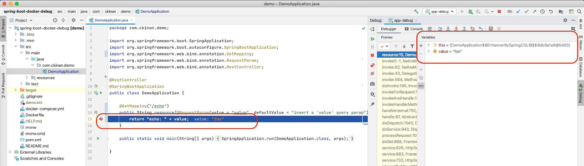

Date: 2020-08-22
I had to setup a local environment for a Spring Boot application running in a Docker container. Naturally, I needed to find a way to debug my app, which is the step I want to explain here.
Prerequisites
- IntelliJ IDEA
- Docker
Scope
- We will have only one (GET) endpoint that receives a "value" as string parameter and return that back to the client.
- We want to put a breakpoint in the controller to demonstrate the debug configuration is working properly.
- We don't want more logic in our code as the goal is to get our debug config ready in this local/docker/springboot environment.
Create the project
Generate and Download a Spring Boot project with only "Spring Web" as a dependency.
Open the project in IntelliJ.
Create the resource controller
Open the DemoApplication class and create a resource controller, in this example mapped with alias /echo, that is simply going to return the value from the request.
package com.ckinan.demo;
import org.springframework.boot.SpringApplication;
import org.springframework.boot.autoconfigure.SpringBootApplication;
import org.springframework.web.bind.annotation.GetMapping;
import org.springframework.web.bind.annotation.RequestParam;
import org.springframework.web.bind.annotation.RestController;
@RestController
@SpringBootApplication
public class DemoApplication {
@GetMapping("/echo")
public String resource(@RequestParam(value = "value", defaultValue = "insert a 'value' query param") String value) {
return "echo: " + value;
}
public static void main(String[] args) {
SpringApplication.run(DemoApplication.class, args);
}
}
Package your app
Execute the following command manually to get the jar file of your project generated using maven.
./mvnw package
You should have the jar file created in the ./target folder. In this example, it should be under the name ./target/demo-0.0.1-SNAPSHOT.jar
Create the Dockerfile
Create a Dockerfile in the root of the project.
FROM openjdk:14-jdk-alpine
ARG JAR_FILE=target/*.jar
COPY ${JAR_FILE} app.jar
ENTRYPOINT ["java","-jar","/app.jar"]
We are giving the instruction to Docker to build an image from openjdk:14-jdk-alpine and copy our recently created jar file that will be used in our container.
Build the image
Run the docker build command to create the Docker Image.
docker build -t ckina/demo-spring-boot-docker-debug .
The image will be created with the repository name ckina/demo-spring-boot-docker-debug, change that if you want.
Remote debug your container
Choose one of the following ways to run your docker container: with docker run or docker-compose.
With docker run
Execute the docker run command using the Docker Image we've just created.
docker run --name demo-spring-boot-docker-debug -e "JAVA_TOOL_OPTIONS=-agentlib:jdwp=transport=dt_socket,server=y,suspend=n,address=*:5005" -p 8080:8080 -p 5005:5005 ckina/demo-spring-boot-docker-debug
With docker-compose
Create a docker-compose.yml file and execute docker-compose.
version: '3.3'
services:
spring-boot:
container_name: demo-spring-boot-docker-debug
build: .
ports:
- '8080:8080'
- '5005:5005'
environment:
- JAVA_TOOL_OPTIONS=-agentlib:jdwp=transport=dt_socket,server=y,suspend=n,address=*:5005
Options:
--name: We are naming our container asdemo-spring-boot-docker-debug, which can be changed as needed.-p 8080:8080: Expose our Spring Boot application outside the docker container-p 5005:5005: Expose the port that will be used to connect our IDE with the application to do the remote debug-e: Set environment variables, in this case, we want to use the-agentlib:jdwpoption for debugging. (We will see more details of it later)
Run:
docker-compose up --build
Verify your endpoint is working by opening this in a browser: http://localhost:8080/echo?value=foo
It should give you echo: foo in the response of the call.
Create the remote debug configuration in IntelliJ and attach the debugger
Go to Edit Configurations and create a Remote config:

Note: It's important to have the command line arguments matching with our configuration we introduced into our docker container. In this case this is what should match:
-agentlib:jdwp=transport=dt_socket,server=y,suspend=n,address=*:5005
Go back to your IDE and do the following:

- Set a breakpoint in your controller, right in the line where the string value is returned
- Click on the debug button
- You should have your IDE connected as the debugger of your Spring Boot application
Now execute one more time http://localhost:8080/echo?value=foo
The breakpoint in the IDE should be activated. We are done.

Details on the command line argument for the Remote Debug
Here we have the details about the -agentlib:jdwp option we introduced in the environment variables of our docker container:
- Format:
-agentlib:jdwp=<name1>[=<value1>],<name2>[=<value2>]... transport=dt_socket: The way you want to connect the debug. It can be done through Socket Transport or Shared Memory Transport. In this example we're using the Socket Transport.server=y: We want to have our application listening to the debugger to be attached, in this case the debugger will be the IDE.suspend=n: We don't want to wait until the debugger is attacher to completely start the Spring Boot application.address=*:5005: Listen for a socket connection on port 5005, which is the port number we want to configure in our IDE.
More details about the -agentlib:jdwp option: https://docs.oracle.com/en/java/javase/14/docs/specs/jpda/conninv.html
Links
- Repo: https://github.com/ckinan/java-practice/tree/master/spring-boot-docker-debug
- Spring Boot example (some pieces of this example is based on what Spring Boot has in its docs): https://spring.io/guides/gs/spring-boot-docker/
- Docs for the
-agentlib:jdwpoption: https://docs.oracle.com/en/java/javase/14/docs/specs/jpda/conninv.html